Visual correction · 0.8.1-visual.1 (10)
SOFTWARE RENDERS of actual game meshes and animation poses. These are not browser or phone screenshots. The rasteriser uses simplified lighting and does not verify WebGL materials, CSS, contact shadows, touch, audio or device performance. Visual acceptance is pending. Retained body and skirt limitations remain visible.
Evidence and blockers · Continue the work · Device acceptance steps
female idle
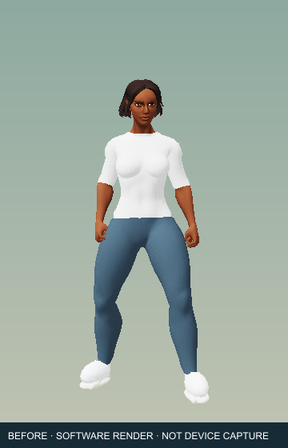
Before · inherited geometry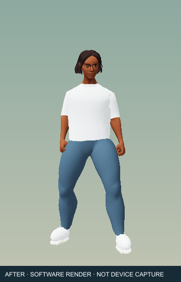
After · current source candidatefemale walk
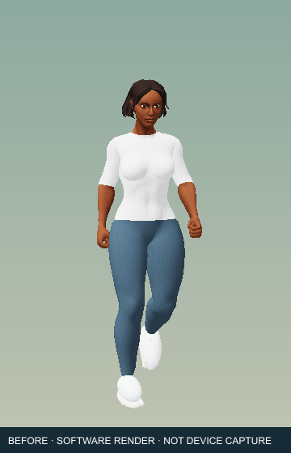
Before · inherited geometry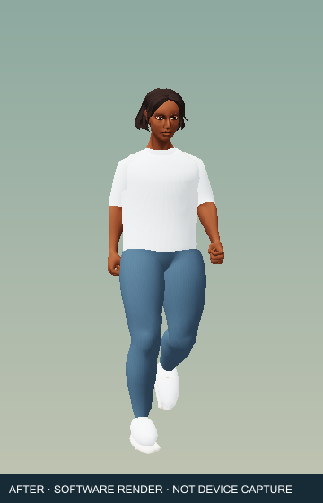
After · current source candidatefemale seated
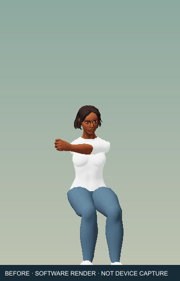
Before · inherited geometry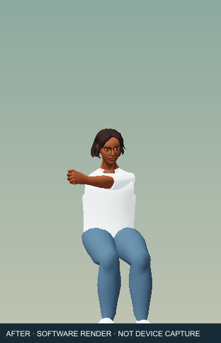
After · current source candidatefemale cook
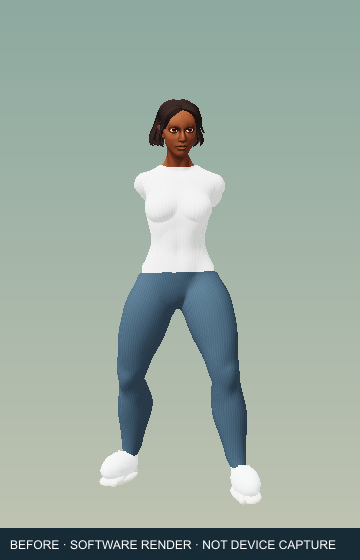
Before · inherited geometry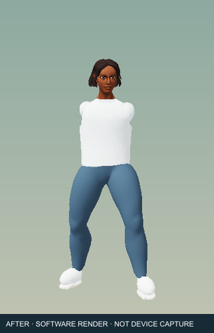
After · current source candidatemale idle
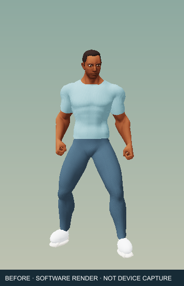
Before · inherited geometry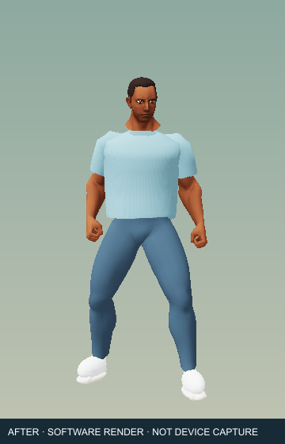
After · current source candidatemale walk
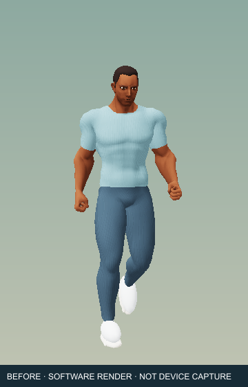
Before · inherited geometry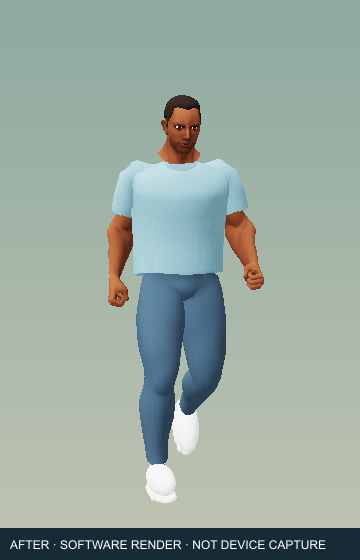
After · current source candidatemale seated
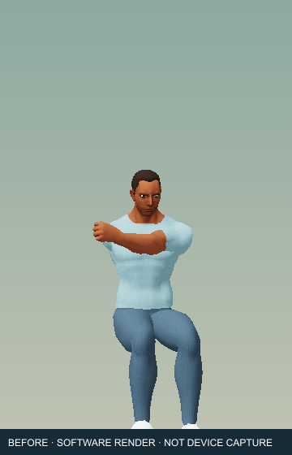
Before · inherited geometry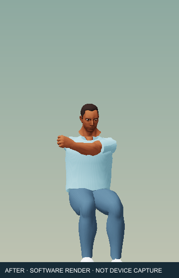
After · current source candidatemale cook
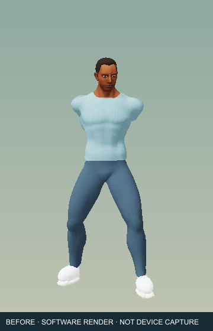
Before · inherited geometry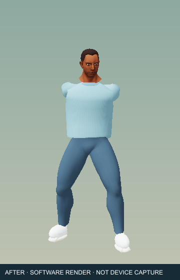
After · current source candidatelegacy dress idle
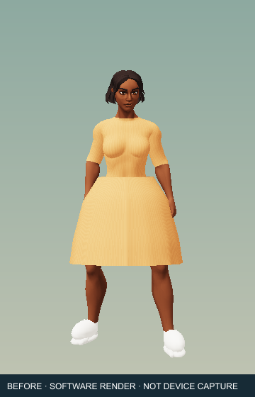
Before · inherited geometry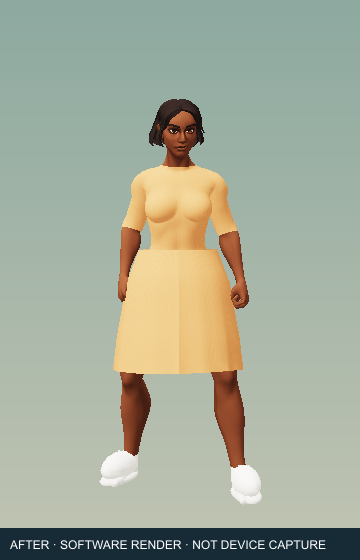
After · current source candidatelegacy dress walk
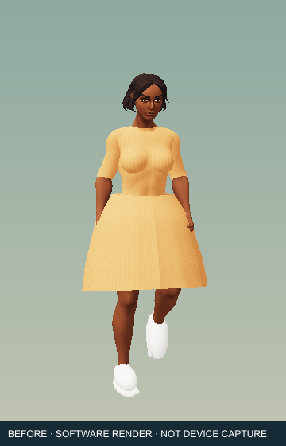
Before · inherited geometry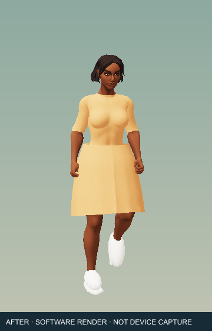
After · current source candidatelegacy dress seated
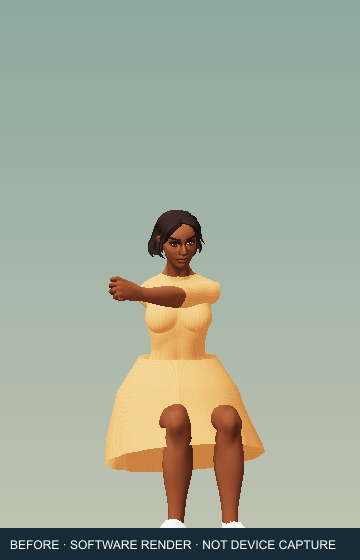
Before · inherited geometry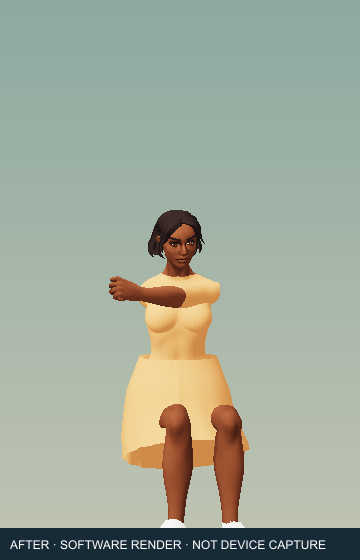
After · current source candidatehome overview
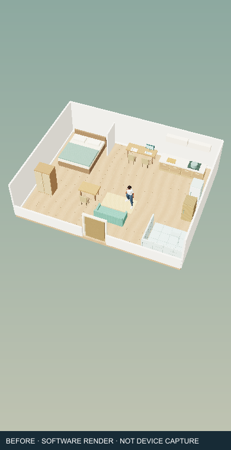
Before · inherited geometry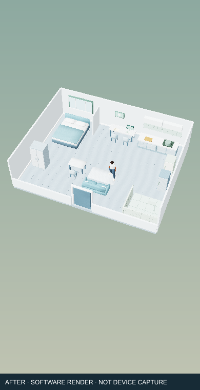
After · current source candidatehome follow
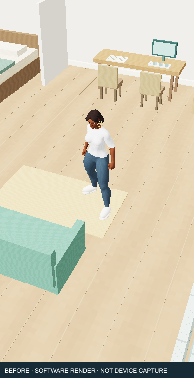
Before · inherited geometry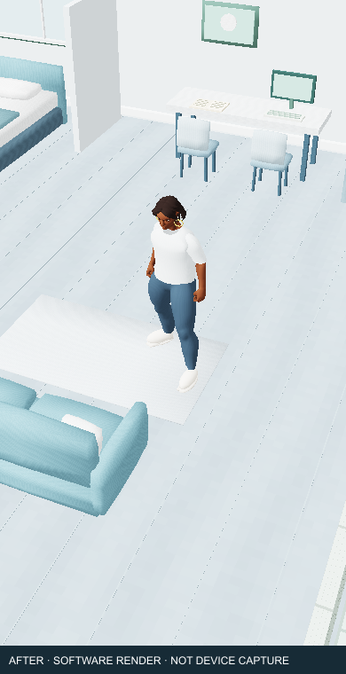
After · current source candidatemama t
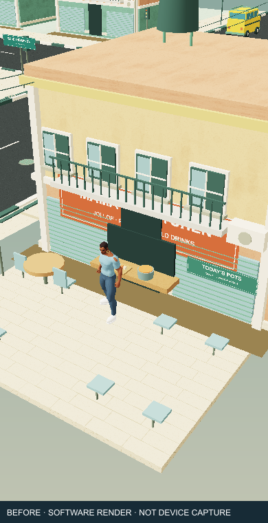
Before · inherited geometry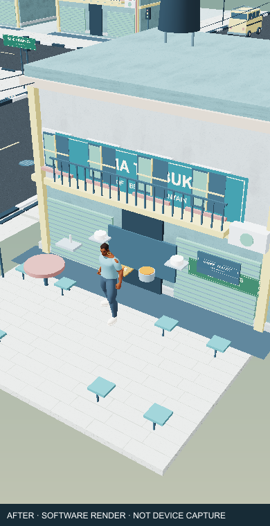
After · current source candidate